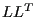

Next: *ELEMENT Up: Input deck format Previous: *ELECTRICAL CONDUCTIVITY Contents
Keyword type: step
This procedure is used to perform a electromagnetic analysis. If transient, it may be combined with a heat analysis. In that case the calculation is nonlinear since the material properties depend on the solution, i.e. the temperature.
There are nine optional parameters: SOLVER, DIRECT, MAGNETOSTATICS, DELTMX, TIME RESET and TOTAL TIME AT START, NO HEAT TRANSFER, FREQUENCY and OMEGA.
SOLVER determines the package used to solve the ensuing system of equations. The following solvers can be selected:
Default is the first solver which has been installed of the following list: SGI, PaStiX, PARDISO, SPOOLES and TAUCS. If none is installed, the default is the iterative solver, which comes with the CalculiX package.
The SGI solver should by now be considered as outdated.SPOOLES is very fast, but has no
out-of-core capability: the size of systems you can solve is limited by your
RAM memory. With 32GB of RAM you can solve up to 1,000,000 equations. TAUCS is
also good, but my experience is limited to the  decomposition, which
only applies to positive definite systems. It has an out-of-core capability
and also offers a  decomposition, however, I was not able to run either of
them so far. PARDISO is the Intel proprietary solver and is about a factor of
two faster than SPOOLES. The most recent solver we tried is the freeware
solver PaStiX from INRIA. It is
really fast and can use the GPU. For large problems and a high end Nvidea graphical
card (32 GB of RAM) we got an acceleration of a factor between 3 and 8
compared to PARDISO. We modified PaStiX for this, therefore you have to
download PaStiX from our website and compile it for your system. This can be
slightly tricky, however, it is worth it!
decomposition, however, I was not able to run either of
them so far. PARDISO is the Intel proprietary solver and is about a factor of
two faster than SPOOLES. The most recent solver we tried is the freeware
solver PaStiX from INRIA. It is
really fast and can use the GPU. For large problems and a high end Nvidea graphical
card (32 GB of RAM) we got an acceleration of a factor between 3 and 8
compared to PARDISO. We modified PaStiX for this, therefore you have to
download PaStiX from our website and compile it for your system. This can be
slightly tricky, however, it is worth it!
What about the iterative solver? If SOLVER=ITERATIVE SCALING is selected, the pre-conditioning is limited to a scaling of the diagonal terms, SOLVER=ITERATIVE CHOLESKY triggers Incomplete Cholesky pre-conditioning. Cholesky pre-conditioning leads to a better convergence and maybe to shorter execution times, however, it requires additional storage roughly corresponding to the non-zeros in the matrix. If you are short of memory, diagonal scaling might be your last resort. The iterative methods perform well for truly three-dimensional structures. For instance, calculations for a hemisphere were about nine times faster with the ITERATIVE SCALING solver, and three times faster with the ITERATIVE CHOLESKY solver than with SPOOLES. For two-dimensional structures such as plates or shells, the performance might break down drastically and convergence often requires the use of Cholesky pre-conditioning. SPOOLES (and any of the other direct solvers) performs well in most situations with emphasis on slender structures but requires much more storage than the iterative solver.
The parameter DIRECT indicates that automatic incrementation should be switched off. The increments will have the fixed length specified by the user on the second line.
The parameter MAGNETOSTATICS indicates that only the steady state should be calculated. Since the magnetic field does not change, no heat is produced and a heat transfer analysis does not make sense. The loading (coil current in the shell elements) is applied by its full strength. If the MAGNETOSTATICS parameter is absent, the calculation is assumed to be time dependent and a transient analysis is performed. A transient analysis triggers by default a complementary heat transfer analysis, thus the temperature dependence of the properties of the materials involved must be provided. Here too, the coil currents are by default applied by their full strength at the start of the step. Other loading patterns can be defined by an *AMPLITUDE card.
The parameter DELTMX can be used to limit the temperature change in two
subsequent increments. If the temperature change exceeds DELTMX the increment
is restarted with a size equal to  times DELTMX divided by the
temperature change. The default for
times DELTMX divided by the
temperature change. The default for  is 0.85, however, it can be changed
by the *CONTROLS keyword. DELTMX is only active in transient calculations. Default value is
is 0.85, however, it can be changed
by the *CONTROLS keyword. DELTMX is only active in transient calculations. Default value is  .
.
The parameter TIME RESET can be used to force the total time at the end of the present step to coincide with the total time at the end of the previous step. If there is no previous step the targeted total time is zero. If this parameter is absent the total time at the end of the present step is the total time at the end of the previous step plus the time period of the present step (2nd parameter underneath the *HEAT TRANSFER keyword). Consequently, if the time at the end of the previous step is 10. and the present time period is 1., the total time at the end of the present step is 11. If the TIME RESET parameter is used, the total time at the beginning of the present step is 9. and at the end of the present step it will be 10. This is sometimes useful if transient heat transfer calculations are preceded by a stationary heat transfer step to reach steady state conditions at the start of the transient heat transfer calculations. Using the TIME RESET parameter in the stationary step (the first step in the calculation) will lead to a zero total time at the start of the subsequent instationary step.
The parameter TOTAL TIME AT START can be used to set the total time at the start of the step to a specific value.
Next, the parameter NO HEAT TRANSFER may be used in a transient analysis to indicate that no heat generated by the Eddy currents should be calculated. However, an external temperature field may be defined using the *TEMPERATURE card.
Finally, the parameters FREQUENCY and OMEGA are used to obtain the steady state answer of the electromagnetic fields due to an alternating current. OMEGA is the frequency of the current. The answer consists of a real part (stored first) and an imaginary part (stored last) of the electric and magnetic field.
First line:
Second line:
Example:
*ELECTROMAGNETICS,DIRECT .1,1.
defines a static step and selects the SPOOLES solver as linear equation solver in the step (default). The second line indicates that the initial time increment is .1 and the total step time is 1. Furthermore, the parameter DIRECT leads to a fixed time increment. Thus, if successful, the calculation consists of 10 increments of length 0.1.
Example files: induction, induction2, induction3.